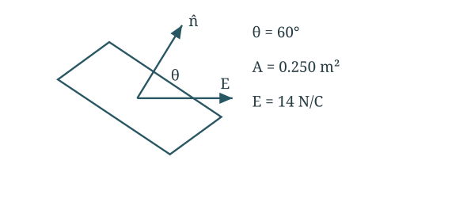
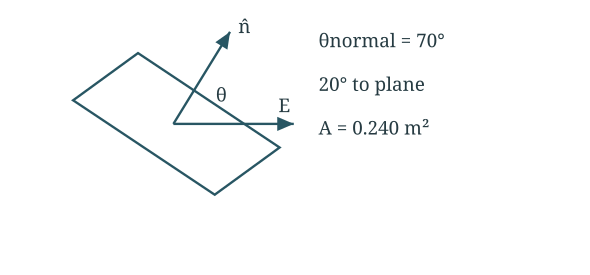
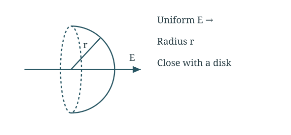
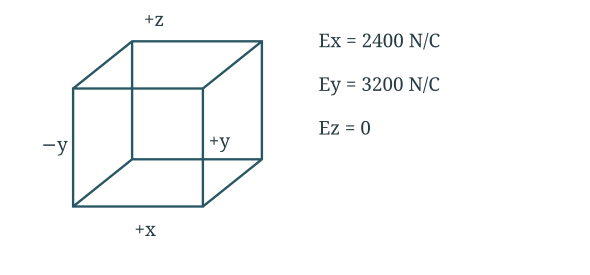
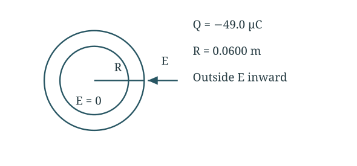

6 assigned questions with the setup, substitutions and final answers.
Question 122.1 · Flux through a flat sheet
A = 0.250 m²; E = 14 N/C; angle from the surface normal = 60°. Find flux magnitude, dependence on shape, and angles for largest/smallest magnitude.

Geometry and directions used below. Schematic, not to scale.
Part (a) Calculate the flux
The angle is measured from the surface normal.
∣Φ∣=EA∣cosθ∣=(14)(0.250)cos60∘=1.75Nm2/C
Parts (b) and (c) Compare orientations
For a flat sheet in a uniform field, its shape does not matter. Only area and angle enter the formula.
∣Φ∣max=EAat θ=0∘ or 180∘∣Φ∣min=0at θ=90∘
Final answer
1.75 N m²/C; maximum at 0°/180°, minimum at 90°.
Shape does not matter for a flat sheet in a uniform field. Magnitude is largest at 0° or 180° and zero at 90°.
Question 222.2 · Angle measured from the plane
Rectangle 0.400 m × 0.600 m; E = 90.0 N/C at 20° to its plane. Find electric-flux magnitude.

Geometry and directions used below. Schematic, not to scale.
Find area and normal angle
The given 20° is measured from the plane, not the normal.
A=(0.400)(0.600)=0.240m2θ=90∘−20∘=70∘
Calculate flux magnitude
Use the normal angle in the dot product.
∣Φ∣=EAcosθ=(90.0)(0.240)cos70∘∣Φ∣=7.39Nm2/C
Final answer
7.39 N m²/C.
A field almost parallel to the sheet gives less flux than EA.
Question 322.5 · Flux through a hemisphere
A hemisphere of radius r has its symmetry axis parallel to a uniform field E. Find the flux through its curved surface.

Geometry and directions used below. Schematic, not to scale.
Close the surface with a disk
The closed hemisphere contains no charge, so its total flux is zero.
Φcurved+Φdisk=ε0Qenc=0
Find the curved-surface flux
For a dome pointing along E, the disk’s outward normal points against E.
Φdisk=−E(πr2)Φcurved=−Φdisk=Eπr2
Final answer
|Φ| = Eπr²; positive for the outward-facing dome along E.
Reverse the dome orientation and the signed flux reverses. Its magnitude uses projected disk area, not curved area 2πr².
Question 422.6 · Flux through six cube faces
Cube side L = 0.100 m; E = 4.00 × 10³ N/C in the xy-plane at 53.1° from +x toward +y. S₁/S₃ are −y/+y; S₂/S₄ are ±z; S₅/S₆ are +x/−x. Find each face flux and total.

Geometry and directions used below. Schematic, not to scale.
Moving charge around inside a surface does not change its total flux, provided no charge crosses the surface.
Final answer
452, −881, −429, 723, −158 N m²/C, respectively.
Redistributing charge within each sphere changes local fields but not these fluxes, provided the same charges remain enclosed.
Question 622.9 · Charged paint on a sphere
A uniform thin paint layer on a plastic sphere of diameter 0.120 m carries Q = −49.0 µC. Find E just inside, just outside, and 0.0500 m beyond the surface.

Geometry and directions used below. Schematic, not to scale.
Part (a) Inside the shell
The paint is a uniform spherical shell. A Gaussian sphere inside encloses no charge.
R=0.120/2=0.0600m,E(R−)=0
Part (b) Just outside
Outside the shell, use its total charge as a point charge at the centre.